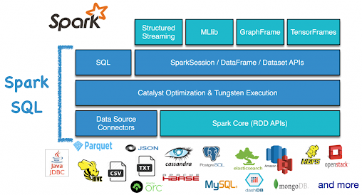

Spark SQL: gestión de datos estructurados
INTRODUCCIÓN
Spark SQL es el módulo de Apache Spark especializado en la gestión y el procesamiento de datos estructurados (y, en muchos casos, semi-estructurados). Proporciona un motor SQL distribuido y un modelo unificado basado en DataFrames y Datasets, permitiendo consultar, transformar y gobernar datos como si fuesen tablas, pero a escala Big Data.

Figura 1: Arquitectura de Spark SQL
En la práctica, Spark SQL actúa como la capa que habilita gran parte del procesamiento analítico moderno dentro de Spark, incluyendo operaciones de tipo ETL, agregaciones, joins y funciones de ventana, beneficiándose de optimización automática para mejorar el rendimiento.
Spark SQL aporta tres capacidades principales:
- SQL distribuido: ejecución de consultas SQL (ANSI SQL con extensiones) sobre grandes volúmenes de datos.
- API estructurada: uso de DataFrames y Datasets como abstracciones para operar con datos en batch (y también en streaming).
- Integración de datos: lectura y escritura desde múltiples fuentes, formatos y catálogos (Parquet, ORC, JSON, CSV, Hive, JDBC, etc.).
Estas capacidades permiten desarrollar pipelines declarativos y optimizados, donde el desarrollador expresa qué resultado desea y Spark decide cómo ejecutarlo de forma eficiente.
CONTENIDO
Modelo de datos: tablas, vistas y DataFrames
Spark SQL trabaja con estructuras tabulares que representan datos organizados en columnas con un esquema:
- Tabla: objeto persistente, gestionado por Spark o externo (dependiendo del catálogo y el formato).
- Vista temporal: definición lógica sobre un DataFrame; no persistente y limitada al ciclo de vida de la sesión.
- Vista global: visible entre sesiones dentro de la misma aplicación Spark.
Ejemplo de vista temporal:
df.createOrReplaceTempView("empleados")
res = spark.sql("SELECT departamento, COUNT(*) n FROM empleados GROUP BY departamento")Data Sources API: lectura y escritura estructurada
Spark SQL se apoya en conectores (“data sources”) para acceder a datos alojados en distintos sistemas. El acceso se realiza mediante:
- DataFrameReader (lectura):
spark.read - DataFrameWriter (escritura):
df.write
df_parquet = spark.read.parquet("/data/ventas.parquet")
df_csv = spark.read.option("header", True).csv("/data/clientes.csv")
df_json = spark.read.json("/data/eventos.json")df_parquet.write.mode("overwrite").parquet("/out/ventas")
df_csv.write.mode("overwrite").option("header", True).csv("/out/clientes")
Consideración importante: al escribir, Spark suele crear un directorio con múltiples ficheros part-xxxxx (uno por partición),
lo cual es normal en entornos distribuidos.
Esquema (Schema) y tipado
La gestión del schema es crítica porque determina tipos de datos, validaciones, compatibilidad y rendimiento. Definir el esquema correctamente evita inferencias costosas y reduce errores asociados a conversiones automáticas de tipo.
Inferencia vs esquema explícitoLa inferencia es útil en prototipos, pero en escenarios de producción suele preferirse un esquema explícito.
Inferencia (en prototipos):
df = spark.read.option("header", True).option("inferSchema", True).csv("/data/datos.csv")Esquema explícito (buena práctica):
from pyspark.sql.types import StructType, StructField, StringType, IntegerType
schema = StructType([
StructField("id", StringType(), True),
StructField("edad", IntegerType(), True),
])
df = spark.read.schema(schema).option("header", True).csv("/data/datos.csv")Catalyst Optimizer: optimización automática
Spark SQL utiliza el optimizador Catalyst para transformar consultas (SQL o API DataFrame) en planes eficientes. El proceso se basa en la construcción de planes lógicos y su posterior optimización y traducción a planes físicos.
Fases generales:
- Logical Plan: representación del cálculo solicitado.
- Optimized Logical Plan: aplicación de reglas de optimización.
- Physical Plan: selección de operadores concretos y estrategias de ejecución.
- Ejecución: distribución en stages y tasks sobre el clúster.

Imagen 2: Fases de ejecución con Catalyst
Ejemplos de optimizaciones habituales:
- Predicate pushdown: empujar filtros al origen cuando el conector lo soporta.
- Column pruning: leer solo columnas necesarias.
- Selección de estrategia de join: broadcast join, sort-merge join, etc.
- Constant folding: precálculo de expresiones constantes.
Inspección del plan:
df.explain(True)Tienes más información sobre Catalyst aquí.
Tungsten y ejecución eficiente
Además de Catalyst, Spark SQL se beneficia de mejoras de ejecución orientadas a rendimiento y eficiencia de memoria, asociadas habitualmente al motor Tungsten. Estas mejoras incluyen representación interna más compacta, mejor gestión de memoria y generación de código para reducir overhead.
Como resultado, en datos estructurados, las operaciones con DataFrames/SQL suelen superar a enfoques equivalentes con RDD en rendimiento y escalabilidad.
Tienes más información sobre Tungsten aquí.
Catálogo, metastore y gestión de tablas
Spark SQL proporciona un catálogo para gestionar metadatos (tablas, vistas, funciones) y puede integrarse con un metastore (por ejemplo, Hive metastore) u otros catálogos según la plataforma. Esto facilita la gobernanza del dato mediante:
- Registro de tablas con nombres lógicos y metadatos.
- Reutilización de datasets en múltiples procesos.
- Definición de ubicaciones (LOCATION) y particiones.
- Gestión coherente de formatos y estructuras de almacenamiento.
Ejemplo: crear una tabla externa sobre Parquet:
spark.sql("""
CREATE TABLE IF NOT EXISTS ventas
USING PARQUET
LOCATION '/data/ventas_parquet'
""")Particionamiento y rendimiento
Spark SQL aprovecha el particionamiento en almacenamiento para acelerar consultas mediante partition pruning. Al particionar por una columna, los datos se organizan en directorios por valor, reduciendo lecturas innecesarias al filtrar por dicha columna.
Particionamiento al escribirdf.write.mode("overwrite").partitionBy("pais").parquet("/out/ventas_part")
Beneficio principal: si se filtra por pais, Spark puede leer solo las particiones necesarias en lugar de escanear el dataset completo.
Spark SQL en pipelines ETL
Spark SQL encaja de forma natural en procesos ETL, donde se combinan lectura, limpieza, enriquecimiento, agregación y escritura:
- Ingesta (read)
- Limpieza y tipado (select, filter, cast)
- Enriquecimiento (joins)
- Agregación (groupBy, ventanas)
- Persistencia (write)
Ejemplo simplificado de ETL:
from pyspark.sql import functions as F
ventas = spark.read.parquet("/data/ventas")
clientes = spark.read.parquet("/data/clientes")
out = (ventas
.join(clientes, "cliente_id", "left")
.filter(F.col("importe") > 0)
.groupBy("pais")
.agg(F.sum("importe").alias("ventas_total"))
)
out.write.mode("overwrite").parquet("/out/ventas_pais")CONCLUSION
Spark SQL es el componente clave de Spark para gestionar datos estructurados a gran escala. Su combinación de SQL distribuido, API estructurada y conectores de datos permite implementar pipelines ETL y analítica con un enfoque declarativo y optimizado. Las optimizaciones de Catalyst y las mejoras de ejecución (asociadas a Tungsten) permiten mejorar el rendimiento frente a enfoques de bajo nivel, mientras que el uso de catálogos, tablas y particionamiento facilita la gobernanza y eficiencia en consultas.